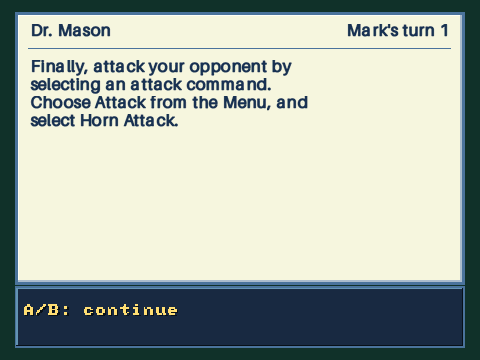
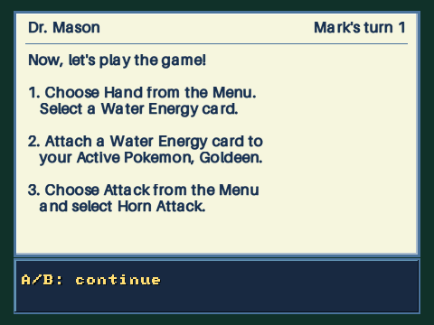
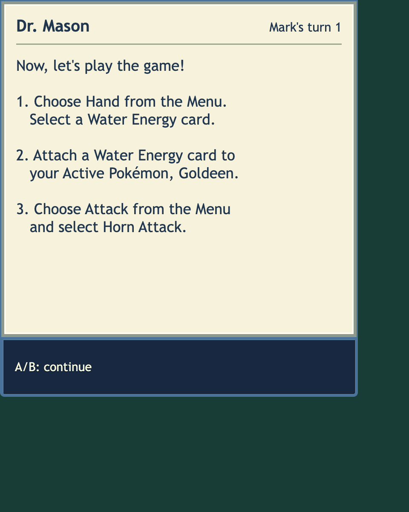

Tutorial lessons
Mason’s explanations now consistently use one large reading panel. The bottom contains only the continue control and a page position when needed.
Numbered steps remain a separate persistent checklist. Redrawing them no longer flashes a new message or replaces Mason’s explanation. The final lesson includes the completed action recap.
The original lesson order, duel state, RNG and engine acknowledgement counts are unchanged. Each reading page requires a fresh press.

480 × 360 native short lesson
480 × 360 native recap
Browser recap